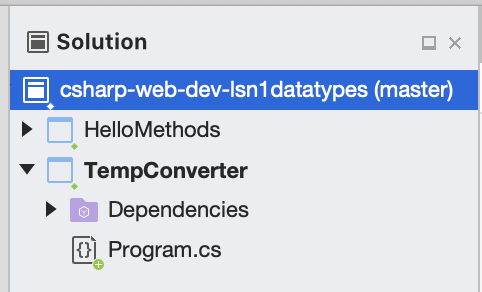

2.2. Some C# Practice
Let’s move beyond our “Hello, World” example and explore a simple temperature conversion program. We want our function to convert a Fahrenheit temperature to Celsius.
2.2.1. Temperature Conversion
Open the
TempConverterproject in yourcsharp-web-dev-datatypessolution in Visual Studio.The
TempConverterproject.Here’s what the file should look like. We will analyze the different statements in a moment.
1using System; 2 3namespace TempConv 4{ 5 class Program 6 { 7 public static void Main(string[] args) 8 { 9 double fahrenheit; 10 double celsius; 11 string input; 12 13 Console.WriteLine("Temperature in F:"); 14 input = Console.ReadLine(); 15 fahrenheit = double.Parse(input); 16 17 celsius = (fahrenheit - 32) * 5 / 9; 18 Console.WriteLine("The Temperature in C is: " + celsius); 19 Console.ReadLine(); 20 } 21 } 22}
Run the program to verify that it works. Entering a Fahrenheit temperature of
212yields the result,The temperature in Celsius is: 100.
There are several new concepts introduced in this example. We will look at them in the following order:
2.2.2. using
The using statement in C# allows us to access classes, methods, and
data stored in different files other than the one we are currently in.
In C#, you can use any class that is available without having to import the class - subject to two very important conditions:
The C# compiler must know that the class exists.
You must use the full name of the class.
Classes that are available to you may be those in the project you are currently working on, or those that come along with the .NET class library, as well as anything you might get from added dependencies.
The class naming system in C# is very hierarchical. The full name of the Console
class used first on line 13 is really System.Console. You can think of this name as having
two parts. The first part, System, is called the namespace, and
the last part is the class. We’ll talk more about the class naming
system a bit later.
One thing to know about the using statement is that it is not responsible for loading classes into memory.
That task falls on the assembly, which is the unit of compiled code
created by Visual Studio (or the C# compiler, more generally).
The using statement tells the compiler that we are going to use a
shortened version of the class’s name. In this example, we are going to
use the class System.Console, but we can refer to it as just
Console. We could use the System.Console class without any
problem and without any import statement provided that we always
referred to it by its full name.
Don’t just trust us, try it yourself! Remove the using statement and
change Console to System.Console in the rest of the code. The
program should still compile and run.
2.2.3. Declaring Variables
In the example above, these lines contain variable declarations:
double fahrenheit;
double celsius;
string input;
Specifically, we are saying that fahrenheit and celsius are going
to reference objects that are of type double. The variable input
will contain a string. This means that if we were to try an assignment
like fahrenheit = "xyz" the compiler would generate an error because
"xyz" is a string and fahrenheit is supposed to be a double.
Suppose we forgot the declaration for celsius and instead
left that line blank. What would happen if we try to run our program?
We get a few errors! The end of the build output looks something like this:
Build FAILED.
Program.cs(11,13,11,20): error CS0103: The name 'celsius' does not exist in the current context
Program.cs(11,13,11,20): error CS0201: Only assignment, call, increment, decrement, await, and new object expressions can be used as a statement
Program.cs(24,13,24,20): error CS0103: The name 'celsius' does not exist in the current context
Program.cs(25,61,25,68): error CS0103: The name 'celsius' does not exist in the current context
0 Warning(s)
4 Error(s)
Time Elapsed 00:00:00.99
========== Build: 0 succeeded, 1 failed, 0 up-to-date, 0 skipped ==========
Build: 4 errors, 0 warnings
The compiler detects an error and Visual Studio displays this message. Visual Studio will notify you of the errors detected in a few locations, including the errors pane and the Application Output pane.
Note
You may have expected to receive an error from some red in your program file. When using an IDE such as Visual Studio, your code is typically checked by the IDE’s built-in compiler as you write your code. Thus, errors are usually visually indicated within your code by the IDE as you write your code, saving you the extra step of having to explicitly compile your code before finding compiler errors. Nice, huh?
The general rule in C# is that you must decide what kind of an object your variable is going to reference and then you must declare that variable before you use it. There is much more to say about the static typing of C#, but for now this is enough.
2.2.4. Input / Output and the Console Class
Console input and output is facilitated by the class System.Console.
We’ll rely heavily on just two methods of this class:
Console.WriteLine and Console.ReadLine.
Console.WriteLine can take parameters of various types, including
string, char, double, bool, and others. Console.WriteLine can only
be provided a single argument. Thus, we’ll need to manually concatenate strings and other
values if we want to print a composite value, converting types if necessary. A newline
character is output after the given message.
int year = 2020;
Console.WriteLine("Hello" + "World")
Console.WriteLine("The year is " + year.ToString());
Similarly, Console.ReadLine returns input as a string. To convert it
to a desired type, you can generally use the syntax
[TYPE].Parse(value), with [TYPE] replaced by the given type.
Here’s an example:
string userInput = Console.ReadLine();
int year = int.Parse(userInput);
2.2.5. Add Comments to Your Code
As programs get bigger and more complicated, they get more difficult to read. Good programmers try to make their code understandable to others, but it is still tricky to look at a large program and figure out what it is doing and why.
Also, there are times when programmers need to isolate or ignore certain portions of their code as they are testing it. In the “Try It” box above, you were instructed to remove a line of code in order to create compiler errors. However, programmers are usually reluctant to delete lines that they might need to bring back.
Best practice encourages us to add comments to our programs. Comments are notes that clearly explain what the code is doing.
A comment is text within a program intended only for a human reader—–it is
completely ignored by the compiler or interpreter. In C#, the // token
indicates the start of a comment, and the rest of the line gets ignored. For
comments that stretch over multiple lines, the text falls between the symbols
/* */.
Comments can be used to temporarily skip a portion of the code when a
program runs. Instead of removing double celsius; in TempConverter, we
could comment out the line. This would create the same compiler errors we
wanted to witness, but it would preserve the original code and allow us to
easily reactivate it by removing the // token from the line.
Example
1using System;
2
3// Here is an example of a comment.
4
5/* Here is how
6to have
7multi-line
8comments. */
9
10/*
11Or
12like
13this.
14*/
15
16namespace HelloWorld
17{
18 class Program // Comments do not have to start at the beginning of a line.
19 {
20 static void Main(string[] args)
21 {
22 Console.WriteLine("Hello World!");
23 // Console.WriteLine("Hello comments!"); This line won't print!
24 }
25 }
26}
Note
In addition to single-line comments and multi-line comments, C# developers can also use XML documentation comments.
XML documentation comments start with /// and when properly written, can be used to generate documentation for a project.
This comment type is something you may encounter working on enterprise code for a company, but is not something that you would use in smaller, personal projects.
For more information on XML documentation comments, check out the documentation.
2.2.6. Check Your Understanding
Question
A using statement is required to use a C# class defined outside of your current file.
True
False
Question
What is the name of the method used to convert input strings to different types?
.Convert().ToString().Parse().ReadLine()